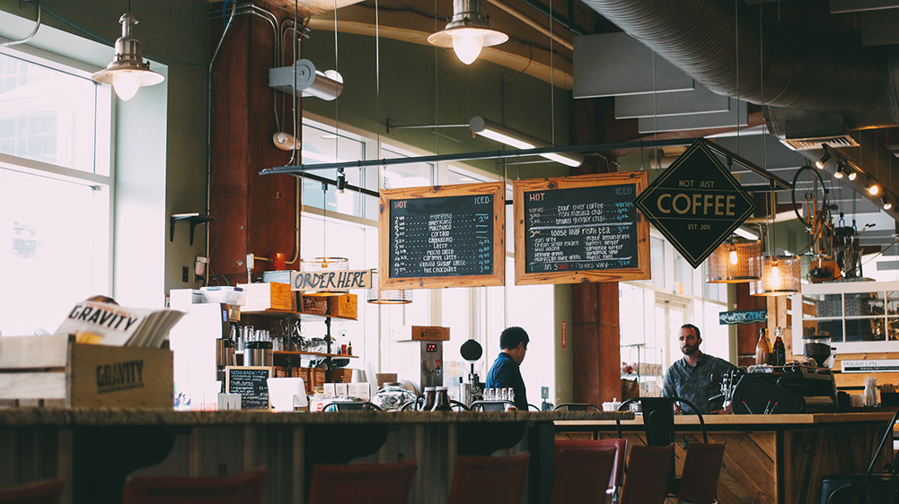
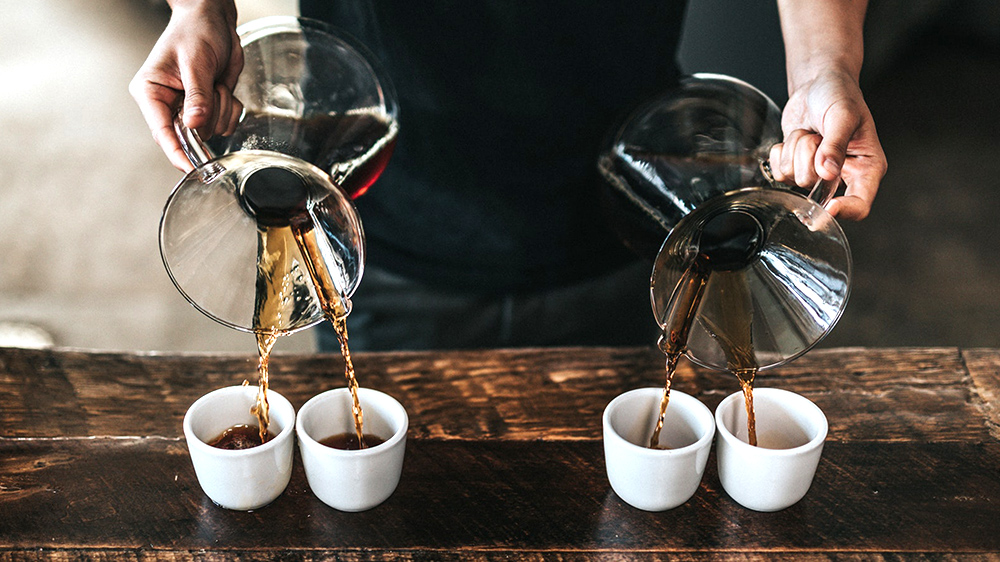
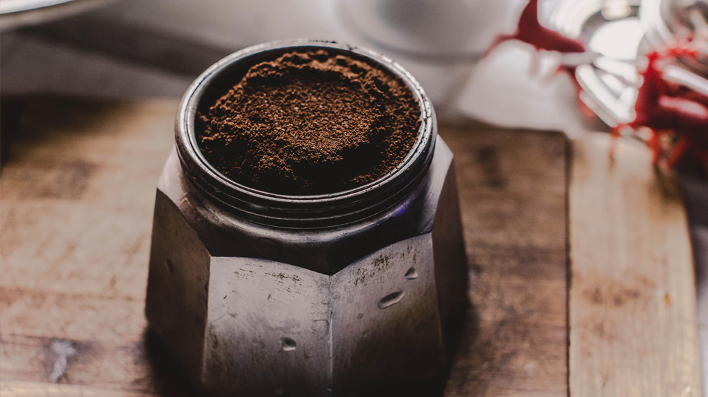
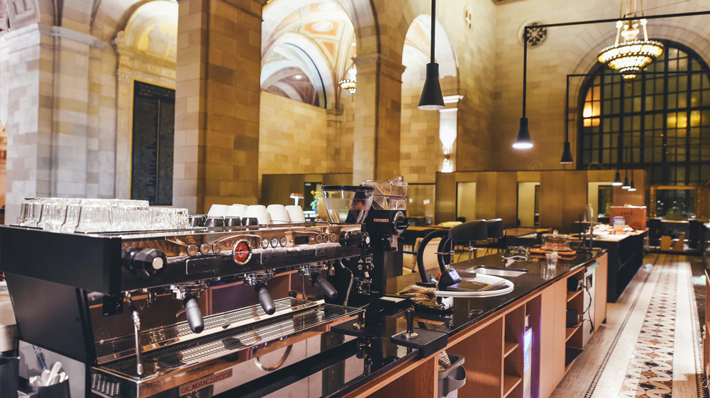

LATEST ARTICLE

MALIBU COFFEE DREAM HOUSE
A coffeehouse, coffee shop or café (sometimes spelt cafe) is an establishment which primarily serves hot coffee, related coffee beverages (café latte, cappuccino, espresso), tea, and other hot beverages. Some coffeehouses also serve cold beverages such as iced coffee and iced tea. Many cafés also serve some type of food, such as light snacks, muffins or pastries.
Mar 12, 2018 • 23 Likes • 2.1K Views
CONTINUE READING

ALAN GRAVES - BEST TECHNIQUES TO SERVE COFFEE
Coffee beans must be ground and brewed to create a beverage. The criteria for choosing a method include flavor and economy. Almost all methods of preparing coffee require that the beans be ground and then mixed with hot water long enough to allow the flavor to emerge but not so long as to draw out bitter compounds.
Feb 7, 2018 • 19 Likes • 1K Views
CONTINUE READING

5 STEPS TO KEEP THE FLAVOUR
A number of products are sold for the convenience of consumers who do not want to prepare their own coffee or who do not have access to coffeemaking equipment. Instant coffee is dried into soluble powder or freeze-dried into granules that can be quickly dissolved in hot water. Originally invented in 1907.
Fev 1, 2018 • 44 Likes • 3.4K Views
CONTINUE READING

SKY IS THE LIMIT - AIRSHIP COFFEE POST
The patrons of the first coffeehouse in England, The Angel, which opened in Oxford in 1650, and the mass of London coffee houses that flourished over the next three centuries were far removed from those of modern Britain. Haunts for teenagers in particular, Italian-run espresso bars and their formica-topped tables were a feature of 1950s.
Jan 22, 2018 • 56 Likes • 3.7K Views
CONTINUE READING